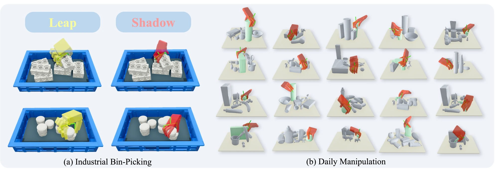
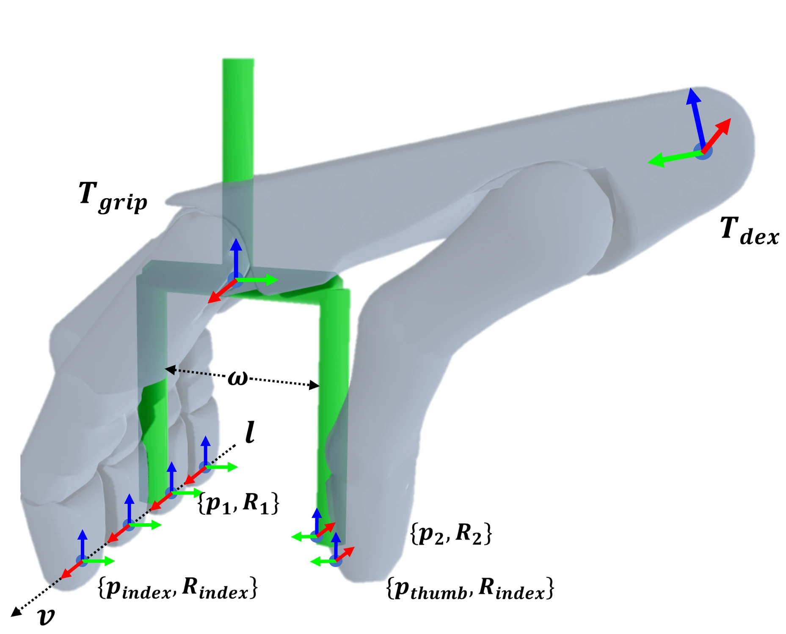
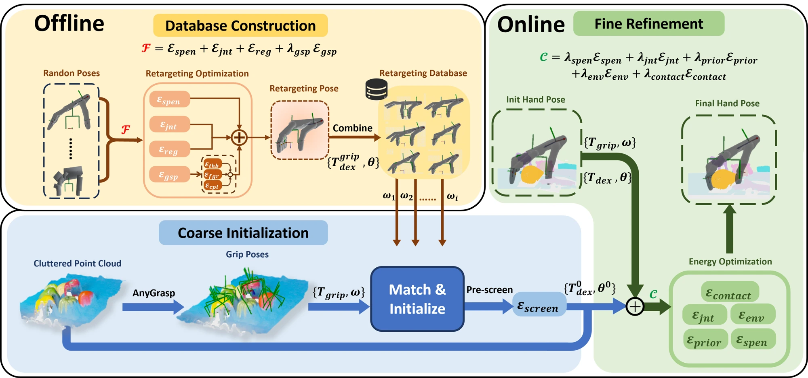
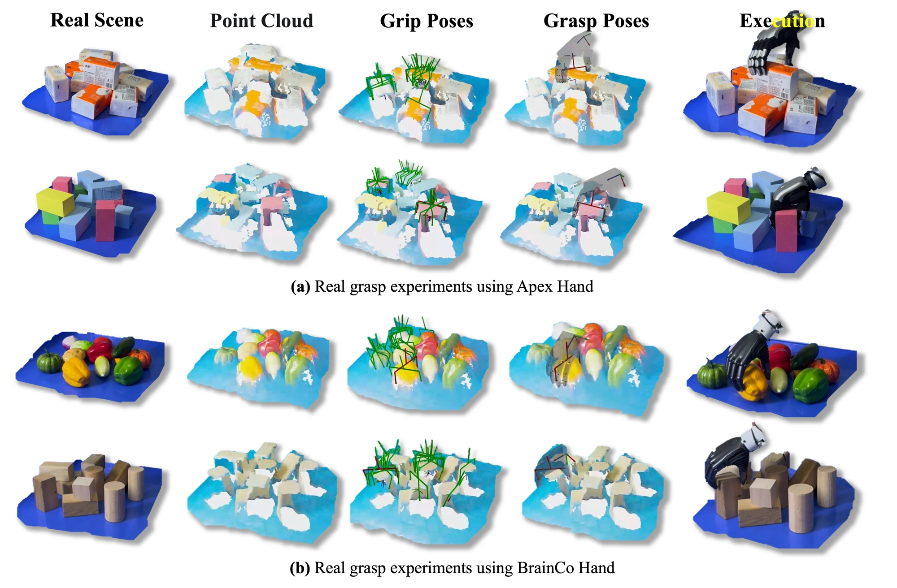

IEEE TASE · 在投
ParaDexGrasp
从杂乱物体中 生成灵巧抓取
利用二指夹爪抓取先验，初始化并优化灵巧手配置，在杂乱场景中生成可执行的抓取。通过离线重定向与在线约束优化，适配不同手型，无需为灵巧手额外训练抓取模型。

方法


离线抓取重定向
围绕二指夹爪的抓取几何，优化灵巧手位姿和关节配置，建立不同开口宽度、抓取模式与手部配置之间的映射。结合几何对齐、关节限位和自碰撞约束，构建可复用的重定向先验库。


在线场景约束优化
使用 AnyGrasp 从观测点云生成二指夹爪抓取，查询先验库得到灵巧手初始配置；随后联合优化手部位姿与关节，在保留抓取先验的同时，约束环境碰撞、自穿透与接触质量，生成最终抓取配置。
真机部署与实验


93%APEX Hand 抓取成功率
91%BrainCo Hand 抓取成功率
基于 RGB-D 观测分割目标，并通过点云补全与重建恢复物体几何，完成二指抓取生成、灵巧手重定向、配置优化与实机执行。平台包括 UR5 机械臂及 APEX、BrainCo 两种灵巧手；成功率为论文所报告的实验结果。
目前验证对象为静态刚体；感知与重建误差仍会影响抓取，候选的串行优化也限制了推理速度。